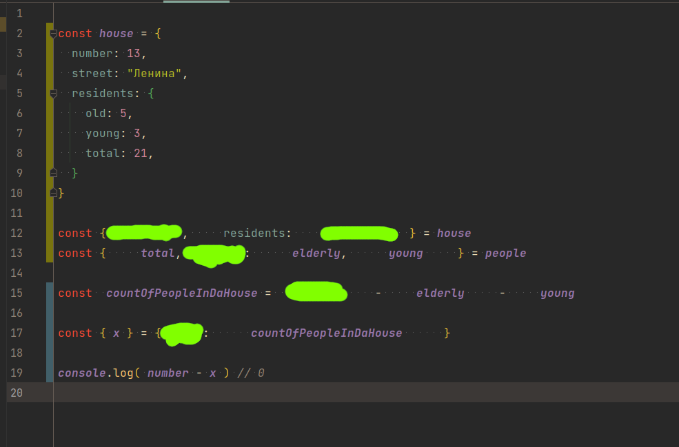
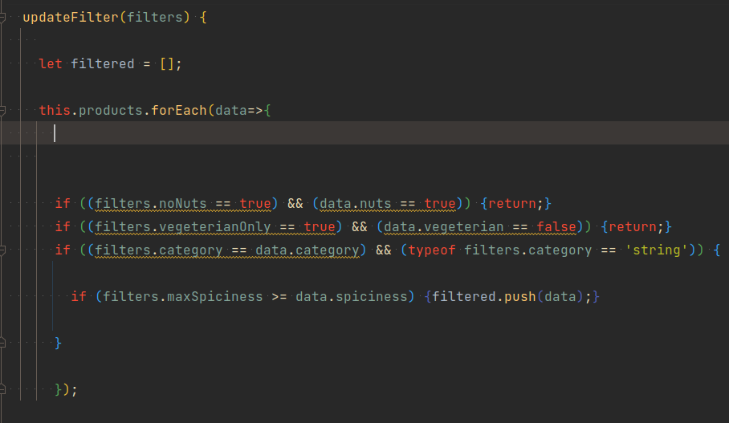

- 1 -
-
Создать класс
Point, принимающий в конструктор координаты точки x и y и запоминающий их. -
Написать функцию,
принимающую две точки (два аргумента, каждый из которых экземляр класса
Point) и возвращающую расстояние между ними (function( Point, Point ): number;) -
Реализовать у класса Point метод, принимающий в аргументе другую точку
и возвращающий объект со смещениями по обоим осям одной точки от другой
т.е. просто вычесть
x1отx2и то же самое сy. Например,{ offsetX: 12.3, offsetY: 4.56 }
- 2 -
- Создать метод, дублирующий функционал метода, высчитывающего смещения, но так, чтобы в теле метода (и только там) использовалась деструктуризация объектов
-
Написать функцию, дублирующую фунционал функции, расчитывающей расстояние между точками,
но так, чтобы все принимаемые аргументы сразу деструктуризировались. Пример:
function fnName( { name } ) { /***/ } -
Написать функцию, принимающую точку (экземляр класса
Point) и вовращающую объект с ключамиleftиtop, гдеleft- положение точки по осиx,top- поy. -
Написать обратную функцию. Принимает объект с ключами
leftиtop, возвращает новую точку. - В последних двух функциях использовать деструктуризацию там, где это будет удобнее, чем обычное обращение по ключу через точку

- 3 -
Заполнить пробелы так, чтобы результат вывода в консоль был такой же - 0
- 4 -
имеется массив массивов из двух чисел:
[ [ 3, 8 ], [ 7.11, 31.989 ], [ 103, -15.15 ] ]
-
С помощью метода массивов
.mapсоздать на основе приведённого выше массива новый массив, состоящий из экземпляров классаPoint, передавая в конструкторе в качествеxпервый элемент массива, в качествеy- второй -
На основе массива, созданного в предыдущем пункте с помощью метода
.mapсоздать новый, поменяв значенияxиyдруг с другом -
На основе исходного массива с массивами, создать новый, в который попадут только те элементы,
у которых первое число меньше десяти. Обязательно использовать метод массивов
.filter. Решение должно поместиться на одной строке -
Задание со звёздочкой
На основе массива
[ 1, 2, 3 ], создать новый, отфильтровав его с помощью метода.filter. В отфильтрованый массив должны попасть только числа меньше десяти. Далее сразу же при помощи.mapпреобразовать отфильтрованный массив в массив вида[ [ 1, 1 ], [ 2, 2 ], ... ], т.е. продублировать каждый элемент. Далее сразу же на основе полученного массива создать новый, с точками (Point) Решение должно поместиться на одной строке и быть записано не больше, чем сотней символов, считая пробелы. - Задание не со звёздочкой, но зависит от предыдущего️¯\(º_o)/¯ . Написать функцию, создающую экземпляр Point из массива двух чисел. Заменить ею такой же дублирующий функционал в предыдущем и первом пункте
- 5 -
Переделать метод renderCards в 8-2 так, чтобы он принимал массив продуктов, которые нужно отрисовать, а не брал всегда все продукты.
- 6 -
В 8-1 везде, где вызывается Object.assign, попробовать использовать css-классы вместо этого

- 7 -
Переписать if`ы так, чтобы третяя и четвёртяя проверки тоже были негативные,
и прекращали выполнение кода дальше, т.е. return
После этого, объединить все четыре if`а в один
После этого, объединить все четыре if`а в один